Mean reverse pairs trading strategy - Investment Fundamentals (Group 34)
Mean Reversion strategy using Pair trading is one of the most popular hedge funds investment strategies. As markets are constantly shifting in and out of the mean reversal cycles, this strategy bets that prices will return to the average or mean.
Members: Muhammad Nauman Alam Khan, Tom Invernizzi, Rayna Zhang, Jerome Billiet, Christopher Baumann
# import required libraries
import numpy as np
import pandas as pd
import statsmodels
import statsmodels.api as sm
from statsmodels.tsa.stattools import coint, adfuller
import os
import arrow
import requests
import time
import seaborn as sn
import matplotlib.pyplot as plt
import seaborn as sns; sns.set(style="whitegrid")
import datetime
import yfinance as yf
import statistics
from pandas_datareader import data as pdr
import matplotlib
# set same font size for a plots
font = {'family' : 'normal',
'weight' : 'normal',
'size' : 20}
matplotlib.rc('font', **font)
1. Get stock data
We are considering the following 7 companies to select a sutiable pair:
# specify tickers
ticker = ["GS", "JPM", "C", "BAC", "MS", "WFC", "BK"]
# specify period of intrerest
start = datetime.datetime(2015, 1, 1)
end = datetime.datetime(2019, 1, 1)
# get data from yahoo
df = pdr.get_data_yahoo(ticker, start, end)['Close']
df.tail()
[*********************100%***********************] 7 of 7 completed
.dataframe tbody tr th {
vertical-align: top;
}
.dataframe thead th {
text-align: right;
}
2. Explore data and select pairs based on correlation
# look at the stocks plot to get an overview
for i in ticker:
figure = plt.figure(figsize=(31,12))
plt.title(i, font)
plt.plot(df[i])
figure.show
findfont: Font family ['normal'] not found. Falling back to DejaVu Sans.

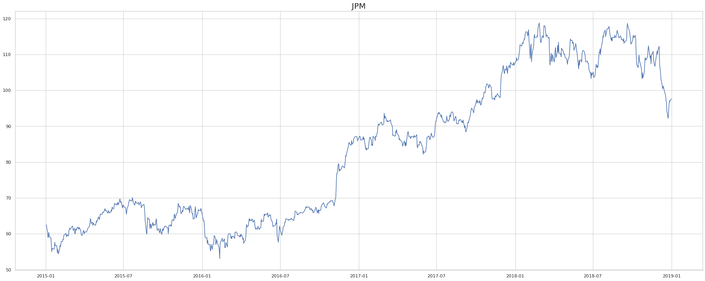
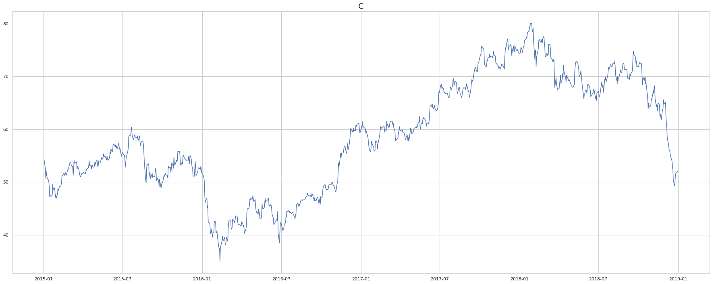
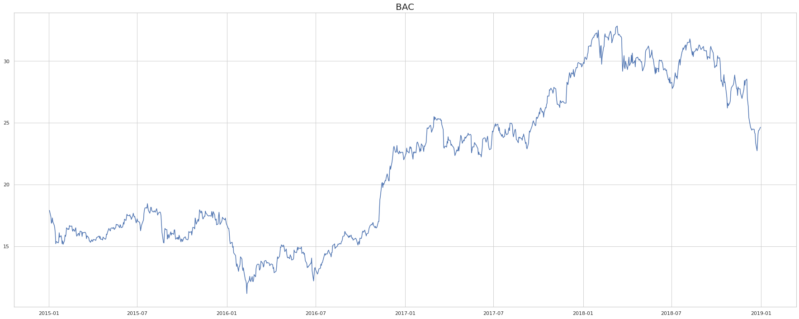
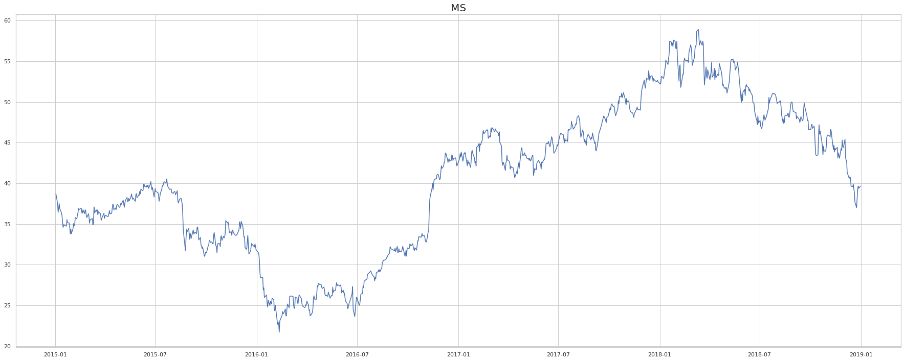
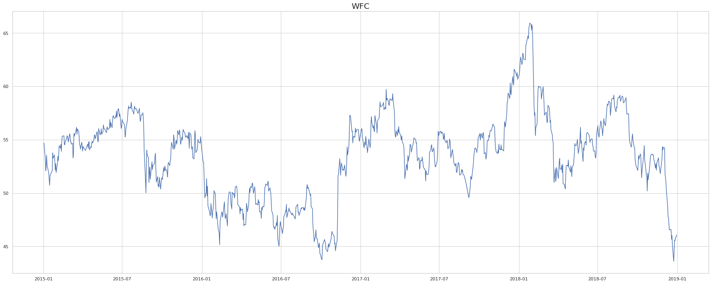
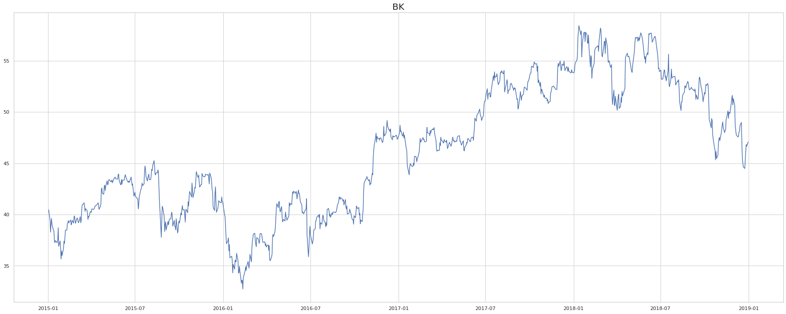
# create correlation table to select correlated pair
corr_matrix = df.corr()
# visualize correlation matrix with a heatmap
fig, ax = plt.subplots(figsize=(35,12))
sn.heatmap(corr_matrix, annot=True, ax=ax)
<matplotlib.axes._subplots.AxesSubplot at 0x121e84a30>
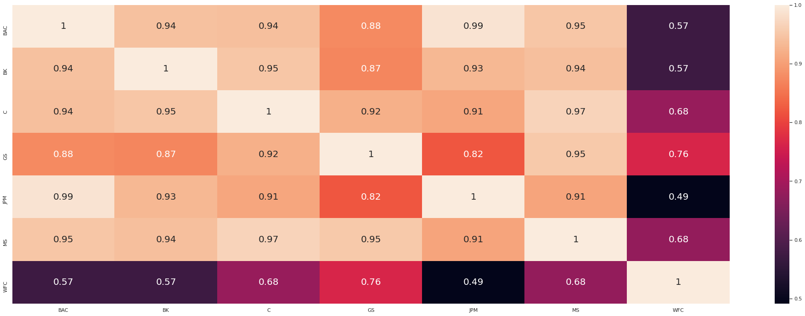
We decided to move on with Morgan Stanley and Citi Bank since they are very strongly correlated (0.97).
# choose pair to continuue with
SS1 = "MS"
SS2 = "C"
S1 = df[SS1]
S2 = df[SS2]
# visualize selected pair
figure = plt.figure(figsize=(31,12))
plt.title((SS1,SS2))
plt.plot(S1, label=SS1)
plt.plot(S2, label=SS2)
plt.legend()
figure.show
<bound method Figure.show of <Figure size 2232x864 with 1 Axes>>
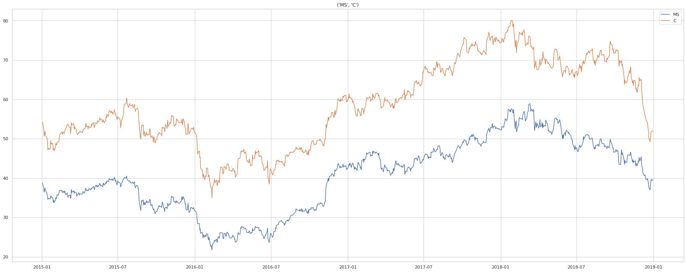
3. Calculate & visualize spread and ratio
# spread
spread = S1-S2
spread.plot(figsize=(31,12), color="gold")
plt.axhline(spread.mean(), color='black')
plt.xlim(start, end)
plt.legend(['Spread']);
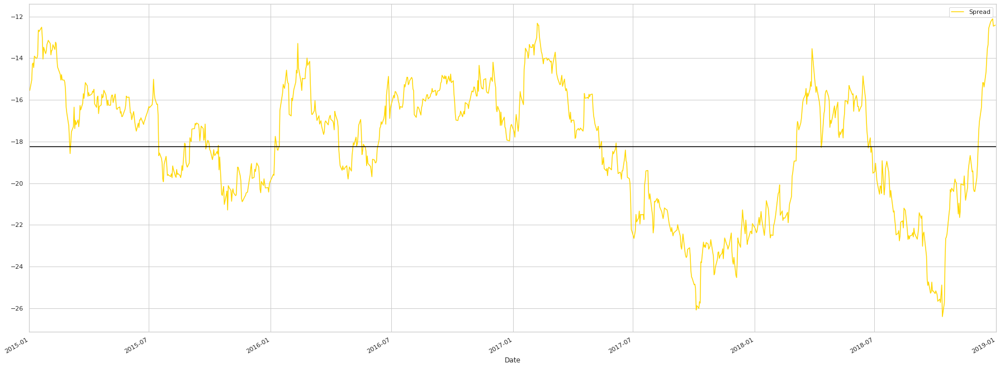
# ratio
ratio = S1/S2
ratio.plot(figsize=(31,12), color="gold")
plt.axhline(ratio.mean(), color='black')
plt.xlim(start, end)
plt.legend(['Price Ratio']);
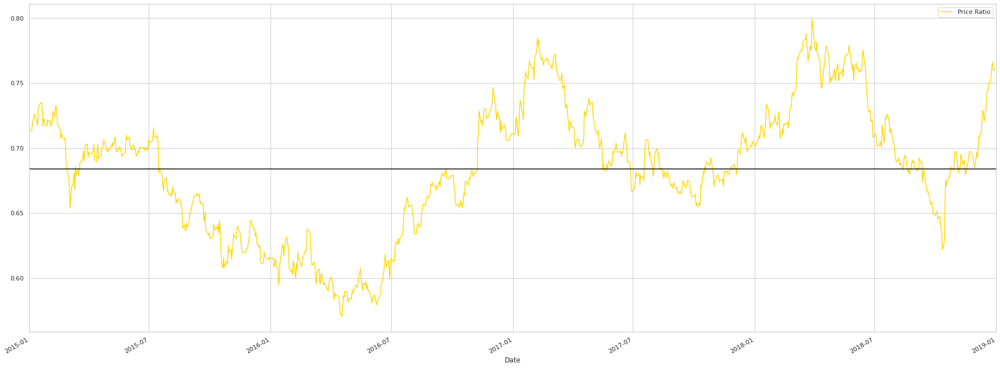
# calculate and plot z-score for ratio over time
def zscore(series):
return (series - series.mean()) / np.std(series)
z_scores = zscore(ratio)
z_scores.plot(figsize=(31,12), color="gold")
plt.axhline(zscore(ratio).mean(), color="black")
plt.axhline(1.0, color='red', linestyle="--")
plt.axhline(-1.0, color='red', linestyle="--")
plt.xlim(start, end)
plt.show()
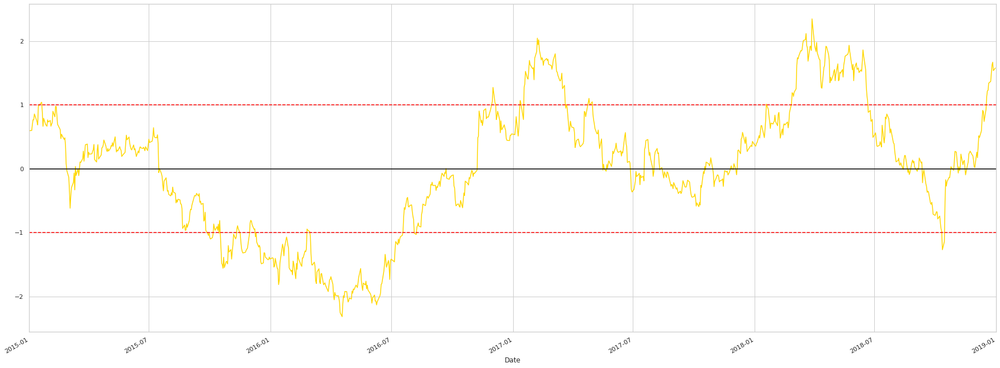
4. Trading alogrithm/ strategy
# Trading algorithm
def trade(S1, S2, window1, window2):
# If window length is 0, algorithm doesn't make sense, so exit
if (window1 == 0) or (window2 == 0):
return 0
# Compute rolling mean and rolling standard deviation
ratios = S1/S2
ma1 = ratios.rolling(window=window1,
center=False).mean()
ma2 = ratios.rolling(window=window2,
center=False).mean()
std = ratios.rolling(window=window2,
center=False).std()
zscore = (ma1 - ma2)/std
S1_change = S1.pct_change()
S2_change = S2.pct_change()
# lists for output generation
trade_entry = []
trade_exit = []
returns_list = []
average_capital = []
typeoftrade_S1 =[]
typeoftrade_S2 =[]
success_trades = 0
loss_trades = 0
# balances
Return = 0
S1_value = 0
S2_value = 0
countS1 = 0
countS2 = 0
for i in range(len(ratios)):
# Transactions when z < -2
if zscore[i] < -2 and (countS1 + countS2) == 0:
countS1 += 1
countS2 += -ratios[i]
S1_value += -S1[i] * countS1 # long in S1
S2_value += S2[i] * -countS2 # short in S2 (here it has to be poisitive, but down there negative)
trade_entry.append(ratios.index[i])
typeoftrade_S1.append("Long")
typeoftrade_S2.append("Short")
average_capital.append(2*abs(S1_value))
#print("")
#print("++++++++++ INVEST ++++++++++")
#print("Time ", ratios.index[i])
#print('Long S1, short S2, Z-score: %s; S1: %s; S2: %s; Ratio: %s'%(zscore[i], S1[i], S2[i], ratios[i]))
#print("S1:",S1_value, "S2:", S2_value)
#print("CountS1:", countS1, "CountS2:", countS2)
# Transactions when z > 2
elif zscore[i] > 2 and (countS1 + countS2) == 0:
countS1 += -1
countS2 += ratios[i]
S1_value += S1[i] # short S1
S2_value += -S2[i] * ratios[i] # long S2
trade_entry.append(ratios.index[i])
typeoftrade_S1.append("Short")
typeoftrade_S2.append("Long")
average_capital.append(2*abs(S1_value))
#print("")
#print("++++++++++ INVEST ++++++++++")
#print("Time ", ratios.index[i])
#print('Short S1, Long S2, Z-score: %s; S1: %s; S2: %s; Ratio: %s'%(zscore[i], S1[i], S2[i], ratios[i]))
#print("S1:",S1_value, "S2:", S2_value)
#print("CountS1:", countS1, "CountS2:", countS2)
# Clear positions if the z-score between 1 and -1
elif abs(zscore[i]) < 1 and (abs(countS1) + abs(countS2) !=0):
S1_sale = S1[i] * countS1
S2_sale = S2[i] * countS2
potential_win_loss = (S1_sale + S1_value) + (S2_sale+S2_value)
return_in_pct = potential_win_loss/ (abs(S1_value) + abs(S2_value))
# increase profitability of proceeded trades
if (potential_win_loss > 5):
Return += potential_win_loss
returns_list.append(potential_win_loss)
trade_exit.append(ratios.index[i])
#print("")
#print("++++++++++ SALE ++++++++++")
#print("Time ", ratios.index[i], "Cum. Return:", Return)
#print('Exit: %s; Z-score: %s; S1: %s; S2: %s; Ratio: %s'%(Return, zscore[i], S1[i], S2[i], ratios[i]))
#print(S1_sale, S2_sale)
print("Awesome! Return of %s, in percent: %s"%(potential_win_loss, 100*return_in_pct))
countS1 = 0
countS2 = 0
S1_value = 0
S2_value = 0
success_trades += 1
# limit potential for loss
elif (potential_win_loss < -5):
Return += potential_win_loss
returns_list.append(potential_win_loss)
trade_exit.append(ratios.index[i])
#print("")
#print("++++++++++ SALE ++++++++++")
#print("Time ", ratios.index[i], "Cum. Return:", Return)
#print('Exit: %s; Z-score: %s; S1: %s; S2: %s; Ratio: %s'%(Return, zscore[i], S1[i], S2[i], ratios[i]))
#print(S1_sale, S2_sale)
print("Bad trade! Have to take a loss of %s, in percent: %s"%(potential_win_loss, 100*return_in_pct))
countS1 = 0
countS2 = 0
S1_value = 0
S2_value = 0
loss_trades += 1
else:
#print("Triggered, but not profitable to execute.")
pass
else:
pass
trade_dates = dict(zip(trade_entry, trade_exit))
return Return, trade_dates, returns_list, typeoftrade_S1, typeoftrade_S2, zscore, average_capital, success_trades, loss_trades
# specify length of train test data split
x = round(0.7 * len(df))
y = x+1
4.1 Train the algorithm
Note: you can remove the ‘#’ in front of the print to gain more insights for each trade.
# optimize thresholds based on training data
Return, trade_dates, returns_list, typeoftrade_S1, typeoftrade_S2, zscore, average_capital, success_trades, loss_trades = trade(df[SS1].iloc[:x], df[SS2].iloc[:x], 1, 10)
Awesome! Return of 5.167397042272874, in percent: 7.47165524675056
Awesome! Return of 5.787773930102269, in percent: 8.953858268490537
Awesome! Return of 5.009005254462792, in percent: 5.987335686349523
# summary of training statistics
print("Absolute return:", Return)
print("Number of success trades:", success_trades)
print("Number of loss trades:", loss_trades)
returnon_capital = Return/statistics.mean(average_capital)
print("Return on capital:", returnon_capital*100,"%")
Absolute return: 15.964176226837935
Number of success trades: 3
Number of loss trades: 0
Return on capital: 20.55252782958857 %
4.2 Test the algorithm
# use trained threshold for unseen data
Return, trade_dates, returns_list, typeoftrade_S1, typeoftrade_S2, zscore, average_capital, success_trades, loss_trades = trade(df[SS1].iloc[y:], df[SS2].iloc[y:], 1, 10);
Awesome! Return of 7.735425166469781, in percent: 7.793093894812951
Awesome! Return of 5.174363389124025, in percent: 4.794628870382043
Awesome! Return of 5.0714496443562425, in percent: 5.273969895193112
Awesome! Return of 6.308458871312091, in percent: 7.069093480865329
# summary of training statistics
print("Absolute return:", Return)
print("Number of success trades:", success_trades)
print("Number of loss trades:", loss_trades)
returnon_capital = Return/statistics.mean(average_capital)
print("Return on capital:", returnon_capital*100,"%")
Absolute return: 24.28969707126214
Number of success trades: 4
Number of loss trades: 0
Return on capital: 24.748786956005077 %
# looking at the spread
spread = S1-S2
spread.plot(figsize=(31,12), color="gold")
plt.axhline(spread.mean(), color='black')
plt.xlim(start, end)
plt.legend(['Spread'])
for i,k in trade_dates.items():
#plt.axvline(pd.Timestamp(i), color = "black")
#print(i, k)
plt.axvspan(pd.Timestamp(i), pd.Timestamp(k), color='lightblue', alpha=0.5)
plt.show()
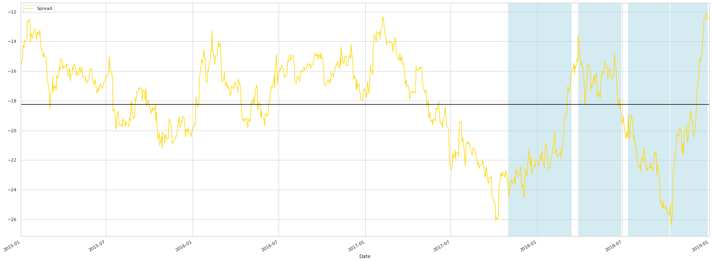
# detailed/ zoomed-in look at timing and return of trades
a = df[SS1].iloc[y:]
b = df[SS2].iloc[y:]
plt.figure(figsize=(31,12))
plt.plot(a)
plt.plot(b, color="red")
counter = 0
for i,k in trade_dates.items():
#plt.axvline(pd.Timestamp(i), color = "black")
#print(i, k)
plt.axvspan(pd.Timestamp(i), pd.Timestamp(k), color='lightblue', alpha=0.5)
plt.annotate(("Return: ", round(returns_list[counter])), xy=(pd.Timestamp(k), a[k]), xytext=(pd.Timestamp(k), a[k]-10))
plt.annotate(typeoftrade_S1[counter], xy=(pd.Timestamp(i), a[i]), xytext=(pd.Timestamp(i), a[i]-5))
plt.annotate(typeoftrade_S2[counter], xy=(pd.Timestamp(i), b[i]), xytext=(pd.Timestamp(i), b[i]+5))
counter += 1
plt.show()
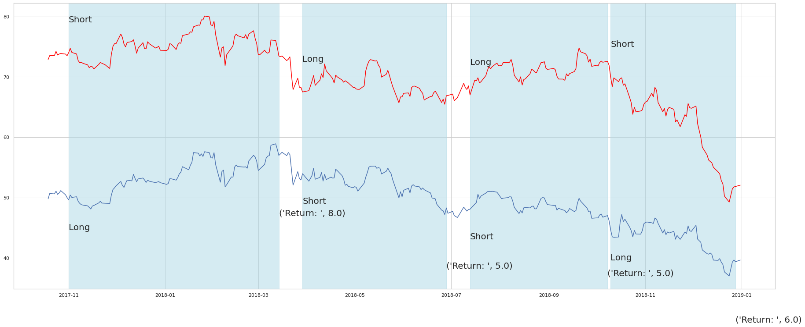
# show thresholds and how they got triggered
plt.figure(figsize=(31,12))
plt.plot(zscore)
plt.axhline(2.0, color='green')
plt.axhline(-2.0, color='green')
plt.axhline(1.0, color='red', linestyle="--")
plt.axhline(-1.0, color='red', linestyle="--")
plt.axhline(0.0, color='black')
#plt.axvline(pd.Timestamp('2017-11-28'), color = "black")
for i,k in trade_dates.items():
#plt.axvline(pd.Timestamp(i), color = "black")
#print(i, k)
plt.axvspan(pd.Timestamp(i), pd.Timestamp(k), color='lightblue', alpha=0.5)
plt.show()
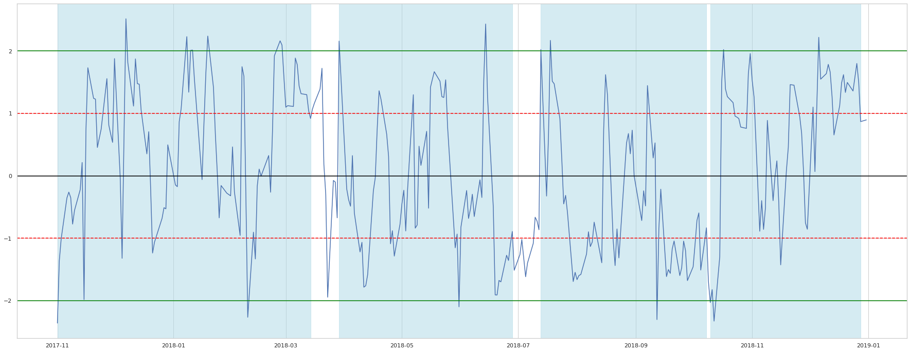